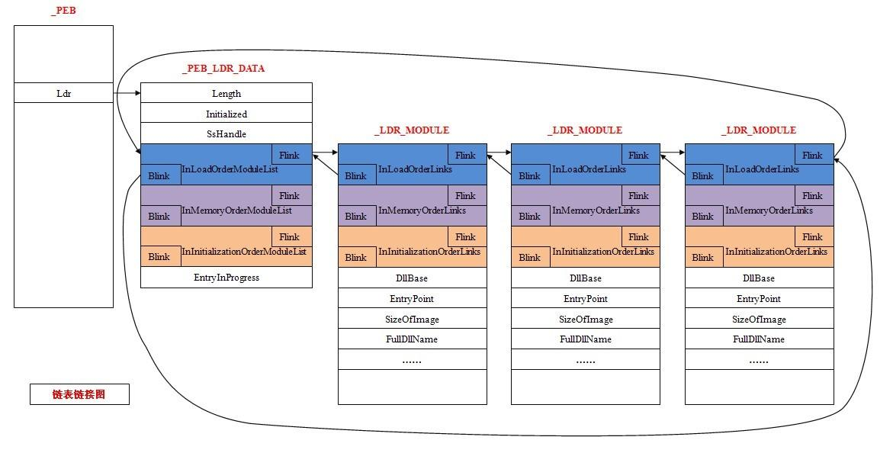
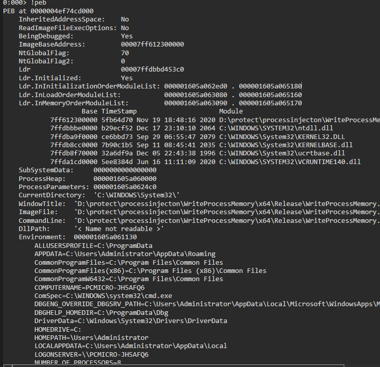
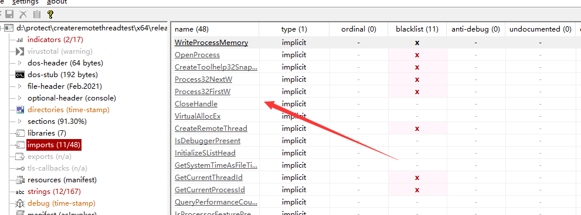
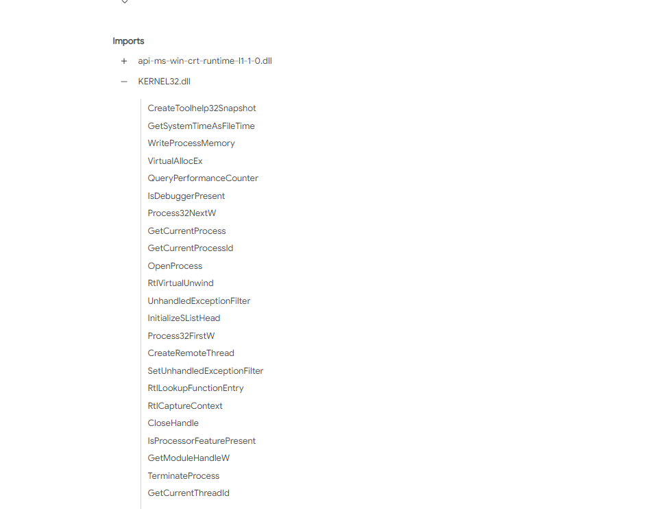
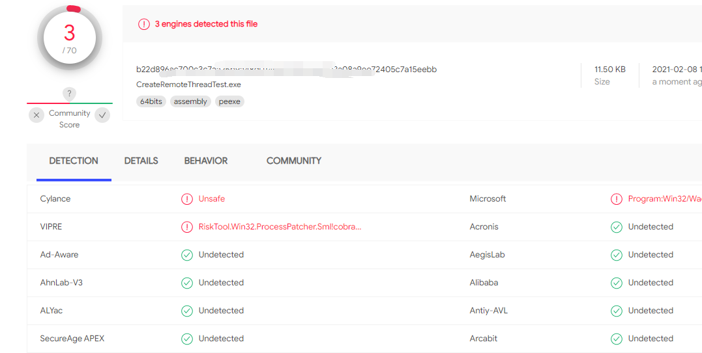
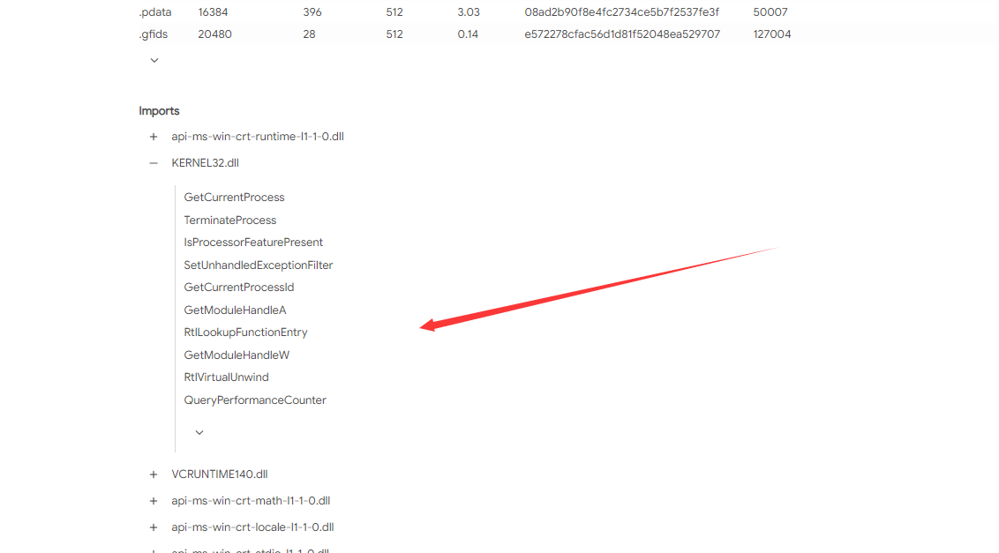
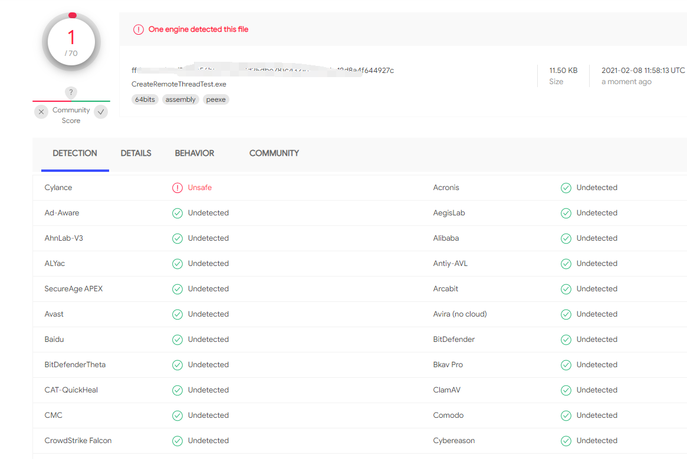
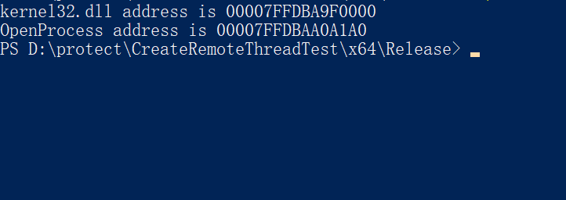
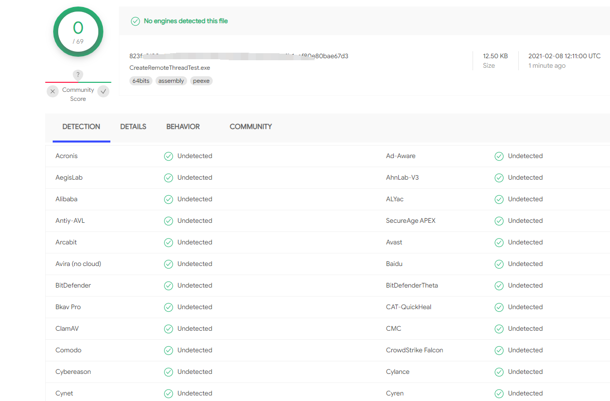

突然好想去放牛，没有压力，以我的智商，只放一头，多了我也数不过来，它吃草，我趴在牛身上睡觉，牛丢了，我也就丢了……省心
－－《風の住む街》
聊一聊隐藏PEB表的一些技巧。
这篇文章中，我们将介绍如何来隐藏你程序的PEB信息。首先先来了解一下什么是PEB，其全程为Process Envirorment Block ，直译过来就是进程环境信息块，存放进程信息，每个进程都有自己的PEB信息。位于用户地址空间。其结构如下：
1 | typedef struct _PEB { |
具体结构可以参考下图：

在windbg中可以使用来进行查看
1 | !peb |

下面我们来看如何简单的进行PEB信息的隐藏，我们先来简单的写一个远程线程注入的例子。
1 |
|
其API调用链主要有下面两条，
查找进程PID：
1 | CreateToolhelp32Snapshot --> Process32First --> Process32Next |
创建线程：
1 | OpenProcess --> VirtualAllocEx --> WriteProcessMemory --> CreateRemoteThread |
经常写代码的都知道，这些都是一些敏感API，被监控的死死的。

VT上也有类似的功能：

查杀率：

解决方法1 GetProcAddress：
函数功能描述:GetProcAddress函数检索指定的动态链接库(DLL)中的输出库函数地址。重明中也已利用该技术。
函数原型：
1 | FARPROC GetProcAddress( |
以CreateToolhelp32Snapshot为例，改成GetProcAddress的调用方法，则变成下面这样：
1 | HMODULE Kernels32 = GetModuleHandleA("kernel32.dll"); |
以此类推，最后的代码如下：
1 |
|
再来看一下函数情况：

在不考虑shellcode的情况下的免杀效果：

决方法2 从PEB下手：
因为我们知道，PEB是内存中的一个结构，其中也包含了DLL以及他们所在的内存中的位置。，所以我们的思路如下：
遍历PEB，然后从PEB中找到kernel32的地址。找到后，遍历其导出表找到我们需要的函数名称。
其查找地址的方法可以参考下面的代码：
1 | #include <winnt.h> |
最终效果如下：

此时我们便可以使用上面的方法继续
demo：
1 |
|
最后的结果：

参考文章：
https://msdn.microsoft.com/en-us/library/windows/desktop/aa813706(v=vs.85).aspx
https://docs.microsoft.com/en-us/windows/win32/api/winternl/ns-winternl-peb
https://stackoverflow.com/questions/12199796/converting-unicodestring-to-char
https://stackoverflow.com/questions/37288289/how-to-get-the-process-environment-block-peb-address-using-assembler-x64-os